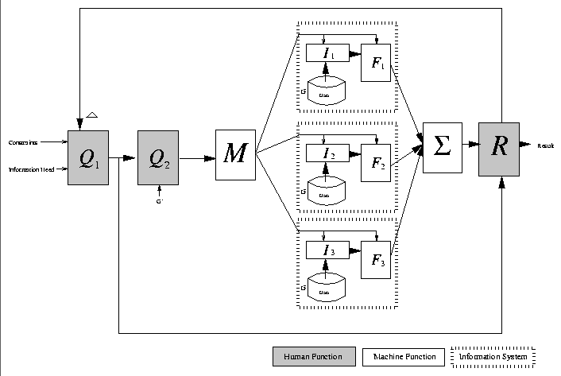

The tool we would like to provide to users is one that is flexible and robust enough to handle the user's internal methods of recall. This means that we would like to provide users with a set of tools that allows a diverse set of queries in which the user may express the same set of hints that occur in their own minds. We call this tool hybrid-search.
This thesis was proposed within the context of the Haystack
project[23], as a means to extend the functionality of this
adaptive personal information repository system. Details of
Haystack's core implementation, which have made this thesis possible,
will be discussed in great details in chapters  and .
and .

Figure: The Hybrid-Search Query Model
The Haystack architecture provides the means to rapidly integrate a
variety of information systems into a user's functional Haystack.
From the query perspective, it possible through Haystack to build a
``multiplexer'' that selects information systems that directly match
the users needs, and a method of combining the results. From the
indexing side, we can build tools to centrally maintain a data
repository. This functionality will allow for the hybrid-search
mechanism we are aiming for. Figure reflects the
goal of breaking up a query into different components for processing
by the optimal information system.
This revised model splits the information system into three parts: I1 + F1 (the IR system), I2 + F2 (the database), and I3 + F3 (the hypertext system). Additionally, the model introduces two new functions:
If it is not entirely clear yet what type of query a user could issue to such a system it may be helpful, in conclusion, to provide some examples of hybrid-search type queries (which independent information systems would not be able to answer):
 . The second part of the
query constrains the results to ``last week,'' and is a database
type query.
. The second part of the
query constrains the results to ``last week,'' and is a database
type query.